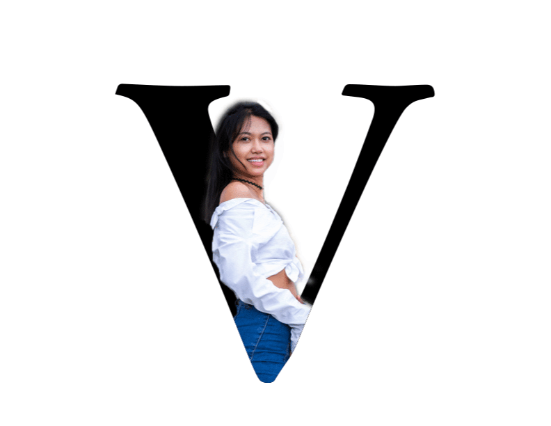

Hi I'Ma Venice Bagolor
I have a degree in New Media Art in Interface Design. I am interested in learning more about design, such as logo-design, typography, branding, and more. My strength is mostly hands on artwork such as sketching and drawing but willing to strengthen my skills in transitioning to the digital world.I do enjoy learning new skill and improving myself through different task and projects.
contact
Email: mbagolor(at)hawaii.edu